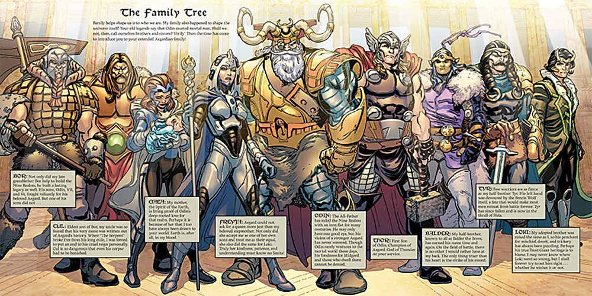
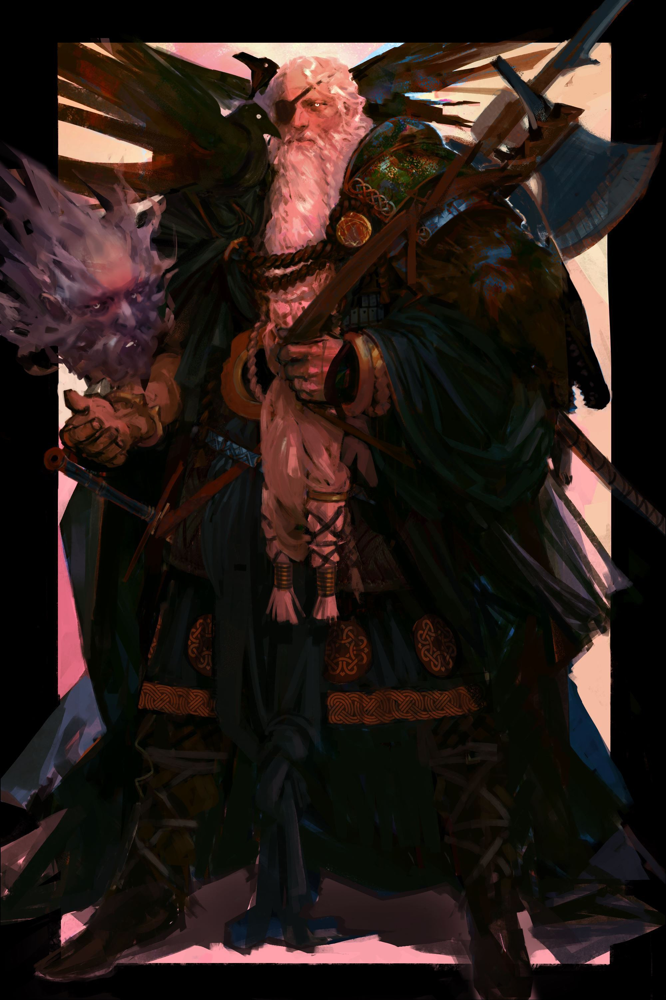

Odin...AllFather
ODIN
Odin is the Norse king of the Aesir, the principal race of Norse gods. He was considered the father of all the gods and was primarily associated with magic, wisdom, war, poetry, and the runic alphabet.
Mentioned frequently from the period of the Roman occupation to the Viking Age, Odin is a prominent figure in Norse mythology who continues to be acknowledged in modern popular culture. For instance, we are reminded of him every Wednesday, the weekday that was named after him; Odin is Woden in Old English, and Woden’s day became Wednesday.
.jpg)
Appearance
In most Norse texts, Odin is depicted as a long-bearded, one-eyed man wearing a broad hat and a cloak. Odin lost his eye upon visiting a Norse god named Mimir. Mimir was known as an extremely wise god, and he had also possessed a well called Mímisbrunnr.
The waters in the well contained substantial wisdom and knowledge, and if someone drank from the well they would also gain wisdom.
However, Mimir required the drinker to sacrifice one of their eyes in order to take a drink. Odin decided to make the trade. Because of this trade, he is traditionally shown as having a dark eye or with a patch over one of his eyes.

Family
Odin had two brothers, named Vili and Ve. Myth has it that Odin created the universe after killing the primal frost giant Ymir with the help of his brothers. The three continued by making the first man and woman, Askr and Embla, from an ash tree and an elm tree.
Odin married Frigg, who is the mother of his sons Baldur, Hod, and Hermod. With Jord, the earth goddess, he fathered Thor. He is believed to have had more sons by other wives, including Vidar from the giantess Grid.
Odin is the son of Borr and the jötunn Bestla. He is married to the goddess Frigg, by whom he is the father of the twin gods Baldr and Höðr. With the giantesses Gríðr and Rindr, Odin has two other sons named Víðarr and Váli. His eldest son is Thor, god of thunder, born to him by Jörð, the personification of the Earth.
Symbols
 The most common symbol associated with Odin is the Valknut symbol, which is made of three linked or interlocked triangles. This symbol appears in a number of places along with Odin or ravens, including the Tängelgårda stone in Sweden.
The most common symbol associated with Odin is the Valknut symbol, which is made of three linked or interlocked triangles. This symbol appears in a number of places along with Odin or ravens, including the Tängelgårda stone in Sweden.
There are a number of interpretations about the meaning of the Valknut. Some believe it represented slain warriors, many of which went to stay with Odin in Valhalla. In fact, the word Valknut is derived from the words valr, which means slain warriors, and knut, which means knot. Others think that it may symbolize the heart of Hrungnir.
Another common symbol affiliated with Odin is his spear, called Gungnir, which he acquired from the trickster god Loki after he stole it from the dwarfs who made it.
The ravens Hugin (thought) and Munin (memory) were Odin’s companions. They traveled across the Nine Worlds in Norse cosmology and returned to their master’s shoulder with tales of what they saw.
Odin also had two pet wolves called Geri and Freki. He is said to have created them when he became lonely. Like ravens, they haunt battlefields and feast upon the dead. Odin, who only drinks wine, gave them all his food.

Powers & Duties
In Valhalla, Odin sat on his throne called Hlidskjalf from where he watched over the Nine Realms.
Odin sought further knowledge in the runes, the letters of the runic alphabet. To achieve this, he hung from a tree with a spear in his side for nine days and nights without food or drink. He often used runes to practice wizardry.
Together with Freya, the goddess of love and war, Odin possessed the souls of slain warriors. The half that belonged to him found a final resting place in Valhalla, his palatial home with 640 doors. They were brought here by Odin’s daughters, the Valkyries, who met them on the battlefield.
Odin had a never-ending quest for wisdom. Sometime after he sacrificed his eye, he also took possession of Mimir’s head when Mimir was decapitated by the Vanir, a rival tribe. The head would tell him secrets and give him advice.
About Odin
- Odin rode on a flying, eight-legged steel horse called Sleipnir
- As a god of war, Odin often meddled in the affairs of humans to incite violence. Myth has it that he could cause battles simply by throwing his spear
- The Vikings, especially the champion berserker warriors, sacrificed humans in Odin’s honor. As the one who decided who won battles, he was their patron;
- Odin meets his demise in the form of Fenrir, a giant wolf and son of Loki, who kills and eats him during Ragnarök, the end of the world in Norse mythology;
- Odin is often described as the king of gods, favored by princes, nobles, and warriors;
- The books of the Prose Edda, an Old Norse work of literature, frequently attests to Odin. His relationship with other figures, such as Freya, Loki, and Frigg, has also been the subject of many Germanic studies;
- Writer J.R.R. Tolkien based several of his characters on Odin. The wizard Gandalf looks a lot like Odin in his cloaked and hooded disguise;